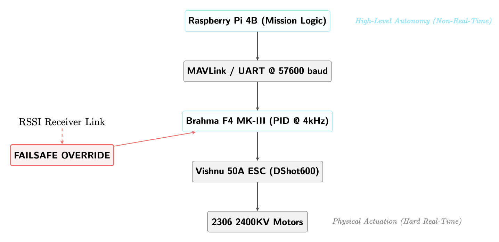

UAV Autonomy & Robust Control Testbed
Evaluating control stability, disturbance rejection, and failsafe behavior under non-ideal real-world conditions.
Performance Metrics
Executive Summary
A 250 mm quadrotor testbed built to study robust control behavior under asymmetric loading, mechanical vibration, and communication loss. All flight-critical control, filtering, and failsafe logic runs directly on the flight controller to preserve deterministic real-time behavior. A companion computer was used exclusively for non-critical autonomy experiments.

System Components
| Subsystem | Details |
|---|---|
| Airframe | 250 mm carbon-fiber quadcopter |
| Motors | 2306-class brushless motors (×4) |
| ESC | 50A ESC (DShot) |
| Flight Controller | Brahma F4 MK-III |
| Companion Computer | Raspberry Pi 4B |
| Navigation | u-blox GPS module |
| Power | 4S LiPo |
System Architecture
Control Strategy
Classical PID stabilization was tuned for robustness rather than peak responsiveness. A 5.67 g asymmetric mass was introduced on one arm to induce imbalance, vibration, and sensor noise. Gains and filtering were adjusted to maintain stable hover without oscillation or control divergence under sustained disturbance.
Deterministic Failsafe
A deterministic state machine executes immediately on signal loss, prioritizing controlled descent and vehicle safety over mission continuation.
- RSSI-based link loss detection
- Immediate attitude neutralization
- Linear throttle ramp-down
- Ground contact detection via IMU
| Metric | Value |
|---|---|
| Detection Latency | ~100–150 ms |
| Attitude Lock | ~250–450 ms |
| Descent Deceleration | ~0.4–0.6 m/s² |
| Touchdown Velocity | ~1.2–1.8 m/s |
| Outcome | Controlled descent |
Learning-Based Guidance (Prototype)
- Designed a non-flight-critical guidance layer above the flight controller
- Policies trained in NVIDIA Isaac Sim with randomized mass, noise, and latency
- Intended deployment on Raspberry Pi generating bounded reference commands
- Validated architecturally and in simulation, not deployed due to latency and signal integrity limits